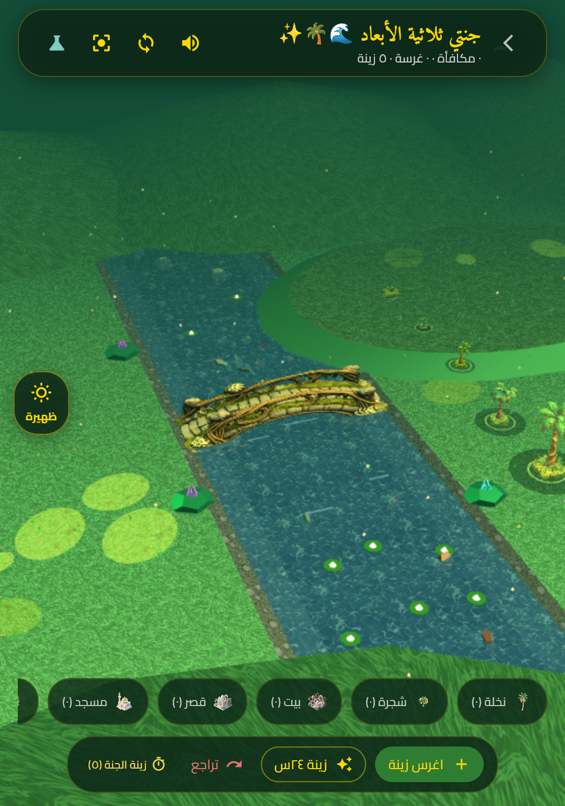
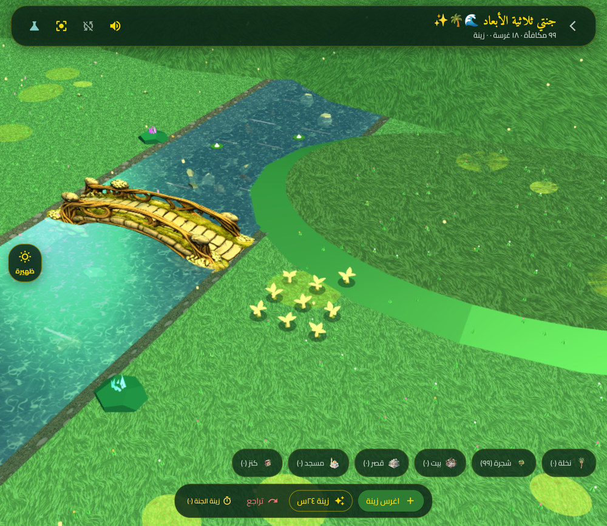
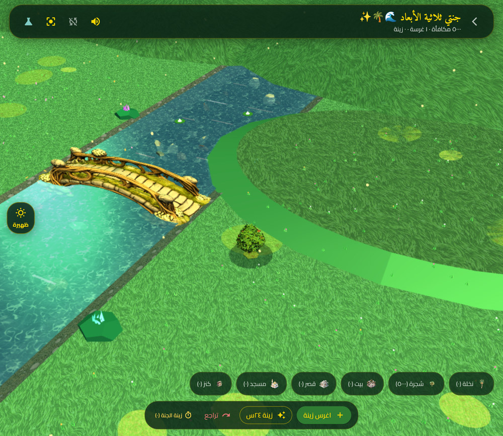
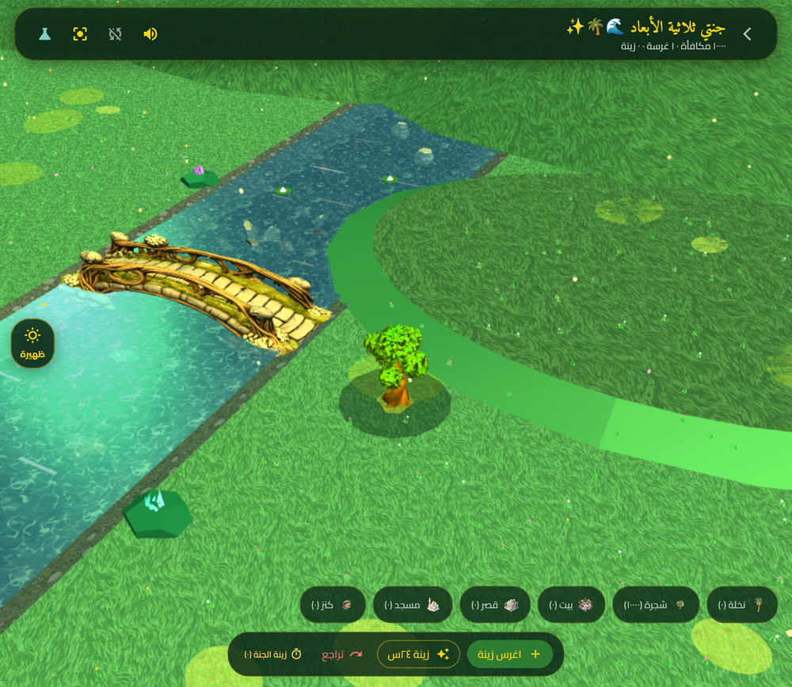
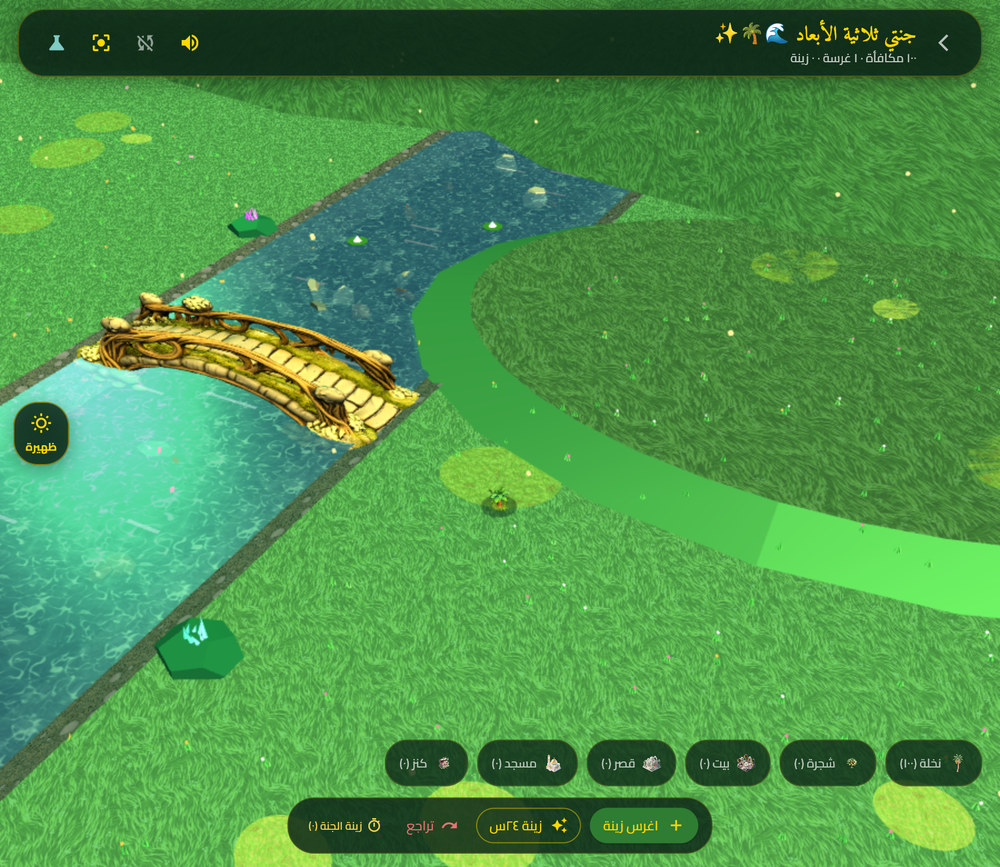

جَنَّتِي · سجل تطوّر المشهد · المرحلة ١
الأشجار والمراتب
١٢ نوفمبر ٢٠٢٦ — استبدال المجسّمات الإجرائية بأصول حقيقية، وضبط سلّم الأحجام والدفن في الأرض.

المشكلة قبل المرحلة
الشجرة والنخلة كانتا مجسّمَين إجرائيَّين: مخروط أخضر وأسطوانة بنية. لا خامة، ولا ظل، ولا فرق بصري بين «شتلة» و«شجرة مثمرة» إلا الحجم. والمراتب الخمس كانت تتغيّر بالأرقام وحدها.
القرارات
-
الأشجار الخمس مقصوصة من
assets/trees.glbبنسب تبسيط لكل قطعة على حدة (0.65 / 0.18 / 0.0157 / 0.0097 / 0.0085). التبسيط الموحّد ٠٫٠١٢ على الملف كله دمّر الشتلة (٩٣ مثلثًا)، فالقصّ أولًا غير قابل للتفاوض. - التلوين مزج ٠٫٤٥ + وهج ٠٫١٨، لا ٠٫٨. المادة تُضرب في صورة الخامة، فمزج ٠٫٨ — المعاير على المجسّمات الإجرائية المسطّحة — كان يمحو خامة النخيل ويحوّل السعف النعناعي إلى ليموني.
-
الدفن في الأرض يُطرح بعد تثبيت القاعدة على الصفر، فتبقى
fitModelToGroundقابلة لإعادة الاستدعاء. نسب النخيل0.40 / 0.16 / 0.13 / 0.13 / 0.15والشجر0.10، والمباني والكنوز لا تُدفن. - سلّم الأحجام لا ينكمش عند الترقية: أقصر موديل في مرتبة يجب أن يتجاوز أطول موديل في المرتبة السابقة بـ٢٠٪ على الأقل. تير ٢ رُفع من ٢٫٠ إلى ٢٫٣ بعد أن كان الفارق +٩٪ فقط.
اللقطات










ما تحقّق: المراتب الخمس صارت تُقرأ بالنظر لا بالرقم، والدفن
جعل قاعدة النخلة تختفي في المرج بدل أن تطفو فوقه.